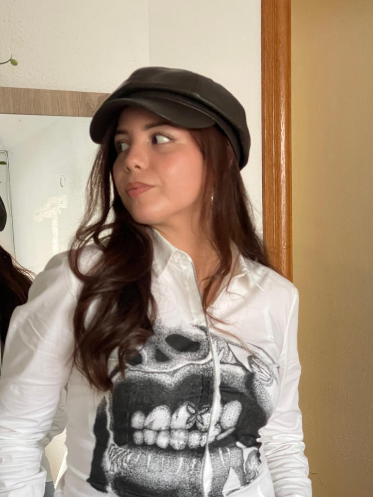
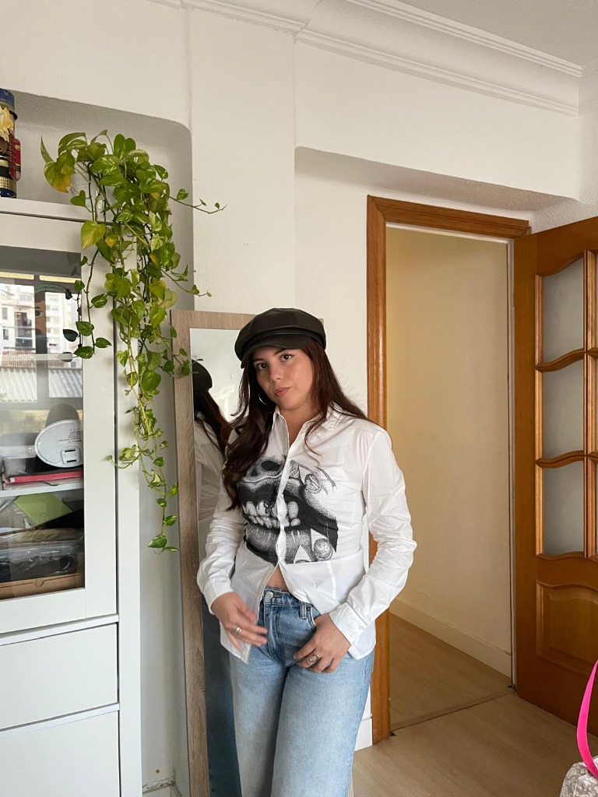

Materia
dispersa
Rescatamos prendas que alguien dejó atrás. Camisas, vaqueros, chaquetas con historia esperando una segunda órbita.
la ropa también explota y vuelve a nacer
NADA SE CREA
DE CERO.
LAS estrellas NACEN
DE UNA EXPLOSIÓN.

Camisa blanca recuperada, dibujada a mano con puntillismo. Miles de puntos de tinta: de cerca, una constelación; de lejos, una sonrisa que no se olvida.
✶ Cuando se va, se va. Cada drop es una explosión irrepetible.
Rescatamos prendas que alguien dejó atrás. Camisas, vaqueros, chaquetas con historia esperando una segunda órbita.
Lavamos, estudiamos el tejido y la caída. La prenda decide en qué constelación se va a convertir.
Dibujo a mano punto a punto, o combinación de textiles asiáticos y occidentales. Horas sobre una sola prenda.
La pieza se firma, se numera y estalla en el catálogo. Una sola unidad. Cuando encuentra dueña, pasa a la historia.

Cada prenda de Acreta nace como una Nova dentro de una ruta estelar. Haz clic en cualquier estrella o paso de la ruta para provocar su explosión de nova y descubrir la prenda que se está gestando en esa coordenada.
Técnica: Puntillismo a mano